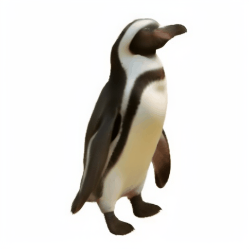

Noisy web images
3D outputs (per-instance)
Animation
|
|
|
 |
 |
|
Given 20-30 in-the-wild images of an articulated animal class, ARTIC3D leverages diffusion prior to estimate the camera viewpoints, pose articulations, part shapes, and surface texture per instance. We also optimize the animations obtained part transformations.
We propose ARTIC3D, a diffusion-guided optimization framework to estimate the 3D shape and texture of articulated animal bodies from sparse and noisy image in-the-wild. Results show that ARTIC3D outputs are detailed, animatable, and robust to occlusions or truncation.
Abstract
Estimating 3D articulated shapes like animal bodies from monocular images is inherently challenging due to the ambiguities of camera viewpoint, pose, texture, lighting, etc. We propose ARTIC3D, a self-supervised framework to reconstruct per-instance 3D shapes from a sparse image collection in-the-wild. Specifically, ARTIC3D is built upon a skeleton-based surface representation and is further guided by 2D diffusion priors from Stable Diffusion. First, we enhance the input images with occlusions/truncation via 2D diffusion to obtain cleaner mask estimates and semantic features. Second, we perform diffusion-guided 3D optimization to estimate shape and texture that are of high-fidelity and faithful to input images. We also propose a novel technique to calculate more stable image-level gradients via diffusion models compared to existing alternatives. Finally, we produce realistic animations by fine-tuning the rendered shape and texture under rigid part transformations. Extensive evaluations on multiple existing datasets as well as newly introduced noisy web image collections with occlusions and truncation demonstrate that ARTIC3D outputs are more robust to noisy images, higher quality in terms of shape and texture details, and more realistic when animated.
Results on Pascal-Part and E-LASSIE images
In addition to Pascal-Part and LASSIE datasets, we introduce E-LASSIE image collections where animal bodies are occluded or truncated. Results show that ARTIC3D can reconstruct robust and high-quality 3D shapes of diverse animal classes.
Framework Overview
Given sparse web images of an animal species, ARTIC3D estimates the camera viewpoint, articulated pose, 3D part shapes, and surface texture for each instance. We propose a novel DASS module to efficiently compute image-level gradients from stable diffusion, which are applied in 1) input preprocessing, 2) shape and texture optimization, and 3) animation.